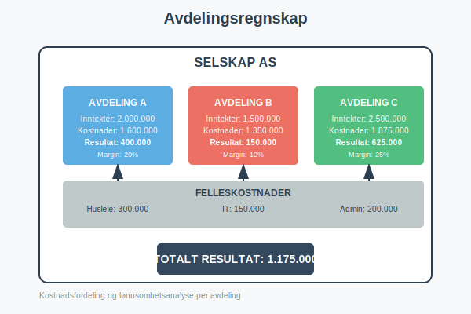
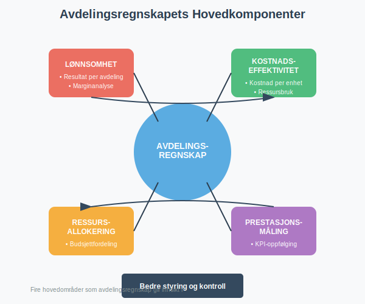
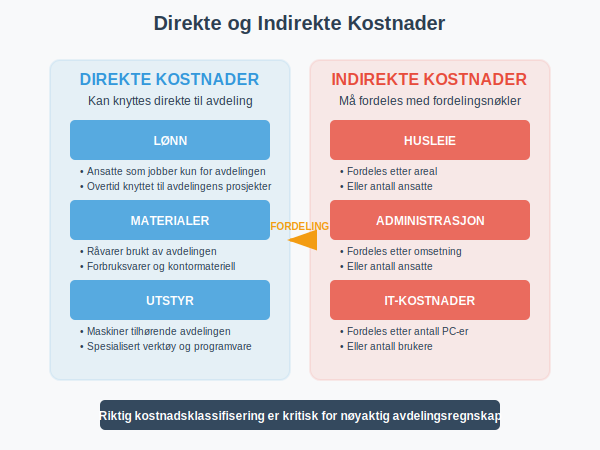
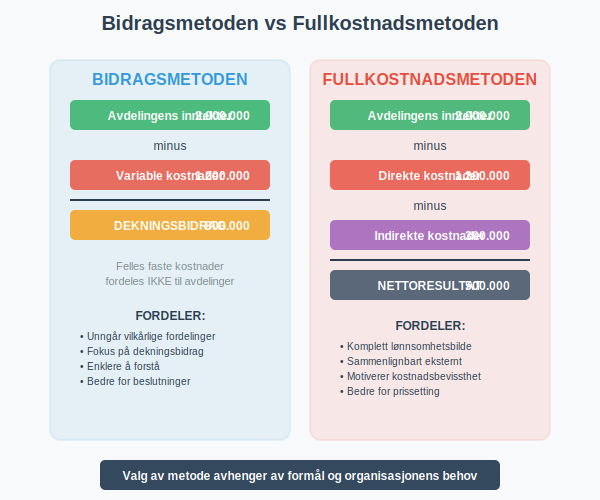
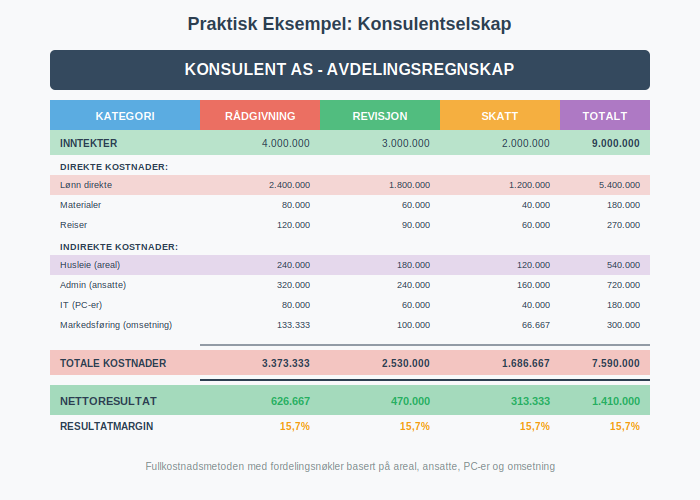
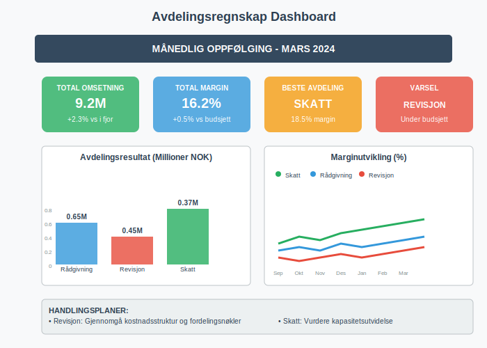
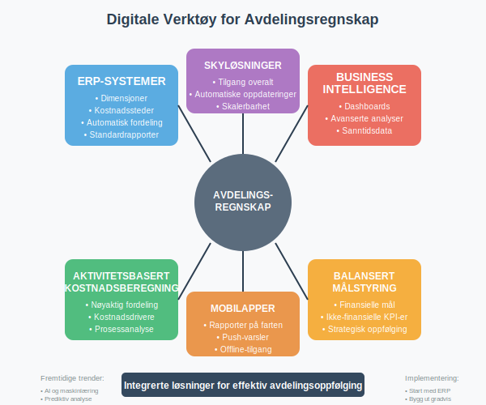

Avdelingsregnskap er en regnskapsmetode som fordeler kostnader og inntekter på ulike avdelinger eller divisjoner i en bedrift. Dette gir ledelsen mulighet til å måle lønnsomhet og effektivitet på avdelingsnivå, og er et viktig verktøy for intern styring og kontroll.

Hva er Avdelingsregnskap?
Avdelingsregnskap, også kalt divisjonsregnskap eller segmentregnskap, er en utvidelse av det tradisjonelle regnskapet hvor man deler opp virksomheten i mindre enheter for å få bedre innsikt i:
- Lønnsomhet per avdeling: Hvilke avdelinger som bidrar mest til resultatet
- Kostnadseffektivitet: Hvor effektivt hver avdeling bruker sine ressurser
- Ressursallokering: Hvor ressursene bør fordeles for optimal avkastning
- Prestasjonsmåling: Hvordan hver avdeling presterer mot mål og budsjett
Avdelingsregnskap bygger på prinsippene fra driftsregnskapet, som fokuserer på operative inntekter og kostnader, men fordeler disse på avdelingsnivå for mer detaljert analyse og styring.
For å få en fullstendig forståelse av lønnsomhetsanalyse, er det viktig å forstå bruttobegrepet generelt og bruttofortjeneste spesielt som grunnlaget for å vurdere hver avdelings bidrag til bedriftens totale lønnsomhet.

Hovedprinsipper i Avdelingsregnskap
Direkte Kostnader
Direkte kostnader kan knyttes direkte til en spesifikk avdeling:
- Lønn: Ansatte som jobber kun for én avdeling
- Materialer: Råvarer og forbruksvarer brukt av avdelingen
- Utstyr: Maskiner og verktøy som tilhører avdelingen
- Reisekostnader: Reiser knyttet til avdelingens aktiviteter
Indirekte Kostnader (Felleskostnader)
Indirekte kostnader må fordeles mellom avdelingene basert på fordelingsnøkler:
- Husleie: Fordeles ofte etter areal eller antall ansatte
- Strøm og oppvarming: Kan fordeles etter areal eller forbruk
- Administrasjon: Fordeles etter omsetning eller antall ansatte
- IT-kostnader: Fordeles etter antall brukere eller datautstyr

Fordelingsnøkler for Felleskostnader
Valg av fordelingsnøkkel er kritisk for å få et rettvisende bilde av hver avdelings lønnsomhet:
| Kostnadskategori | Vanlige Fordelingsnøkler | Fordeler | Ulemper |
|---|---|---|---|
| Husleie | Areal, antall ansatte | Enkelt å måle | Reflekterer ikke alltid faktisk bruk |
| Lønn administrasjon | Antall ansatte, lønnssum | Logisk sammenheng | Kan straffe avdelinger med høyt utdannede ansatte |
| IT-kostnader | Antall PC-er, brukere | Direkte sammenheng | Reflekterer ikke kompleksitet |
| Markedsføring | Omsetning, antall kunder | Følger nytte | Kan være urettferdig for nye avdelinger |
| Strøm | Areal, antall ansatte | Enkelt å implementere | Reflekterer ikke faktisk forbruk |
Metoder for Avdelingsregnskap
1. Bidragsmetoden
Fokuserer på dekningsbidrag per avdeling:
Avdelingens inntekter
- Avdelingens variable kostnader
= Dekningsbidrag
Dekningsbidrag for alle avdelinger
- Felles faste kostnader
= Totalt resultat
Fordeler:
- Viser hver avdelings bidrag til å dekke faste kostnader
- Unngår vilkårlige fordelinger av faste kostnader
- Enklere å forstå og implementere
2. Fullkostnadsmetoden
Fordeler alle kostnader til avdelingene:
Avdelingens inntekter
- Avdelingens direkte kostnader
- Andel av indirekte kostnader
= Avdelingens nettoresultat
Fordeler:
- Gir et “komplett” bilde av hver avdelings lønnsomhet
- Lettere å sammenligne med eksterne benchmarks
- Motiverer til kostnadsbevissthet

Praktisk Implementering
Trinn 1: Definere Avdelinger
Avdelingene må være klart avgrenset og ha:
- Egen ledelse eller ansvarlig person
- Identifiserbare inntekter eller kostnader
- Mulighet for påvirkning av resultatet
- Tilstrekkelig størrelse til å rettferdiggjøre oppfølging
Trinn 2: Identifisere Kostnader og Inntekter
Direkte poster:
- Lønn til ansatte i avdelingen
- Materialer brukt av avdelingen
- Utstyr og maskiner tilhørende avdelingen
- Reiser og andre direkte utgifter
Indirekte poster som må fordeles:
- Husleie og lokalkostnader
- Felles administrasjon
- IT og kommunikasjon
- Markedsføring og salg
Trinn 3: Velge Fordelingsnøkler
Eksempel på fordelingsnøkler for et konsulentselskap:
| Avdeling | Ansatte | Areal (m²) | Omsetning | PC-er |
|---|---|---|---|---|
| Rådgivning | 8 | 120 | 4.000.000 | 8 |
| Revisjon | 6 | 90 | 3.000.000 | 6 |
| Skatt | 4 | 60 | 2.000.000 | 4 |
| Administrasjon | 2 | 30 | - | 2 |
| Totalt | 20 | 300 | 9.000.000 | 20 |
Detaljert Eksempel: Konsulentselskap
La oss se på et praktisk eksempel med et konsulentselskap som har tre avdelinger:
Direkte Inntekter og Kostnader
| Rådgivning | Revisjon | Skatt | Totalt | |
|---|---|---|---|---|
| Inntekter | 4.000.000 | 3.000.000 | 2.000.000 | 9.000.000 |
| Lønn direkte | 2.400.000 | 1.800.000 | 1.200.000 | 5.400.000 |
| Materialer | 80.000 | 60.000 | 40.000 | 180.000 |
| Reiser | 120.000 | 90.000 | 60.000 | 270.000 |
Felleskostnader som skal fordeles
| Kostnad | Beløp | Fordelingsnøkkel | Rådgivning | Revisjon | Skatt |
|---|---|---|---|---|---|
| Husleie | 600.000 | Areal | 240.000 | 180.000 | 120.000 |
| Administrasjon | 800.000 | Ansatte | 320.000 | 240.000 | 160.000 |
| IT-kostnader | 200.000 | PC-er | 80.000 | 60.000 | 40.000 |
| Markedsføring | 300.000 | Omsetning | 133.333 | 100.000 | 66.667 |
Resultat per Avdeling (Fullkostnadsmetoden)
| Rådgivning | Revisjon | Skatt | Totalt | |
|---|---|---|---|---|
| Inntekter | 4.000.000 | 3.000.000 | 2.000.000 | 9.000.000 |
| Direkte kostnader | 2.600.000 | 1.950.000 | 1.300.000 | 5.850.000 |
| Indirekte kostnader | 773.333 | 580.000 | 386.667 | 1.740.000 |
| Totale kostnader | 3.373.333 | 2.530.000 | 1.686.667 | 7.590.000 |
| Nettoresultat | 626.667 | 470.000 | 313.333 | 1.410.000 |
| Resultatmargin | 15,7% | 15,7% | 15,7% | 15,7% |

Analyse og Oppfølging
Nøkkeltall for Avdelingsanalyse
Lønnsomhetstall:
- Resultatmargin: Nettoresultat / Inntekter
- Dekningsgrad: Dekningsbidrag / Inntekter
- Avkastning på investert kapital: Resultat / Investert kapital
Effektivitetstall:
- Inntekt per ansatt: Inntekter / Antall ansatte
- Kostnader per ansatt: Totale kostnader / Antall ansatte
- Produktivitet: Produserte enheter / Arbeidstimer
Veksttall:
- Inntektsvekst: Endring i inntekter fra i fjor
- Markedsandel: Avdelingens andel av total omsetning
- Kundevekst: Endring i antall kunder
Rapportering og Oppfølging
Månedlig rapportering:
- Resultat mot budsjett
- Utvikling i nøkkeltall
- Avvik og forklaringer
- Handlingsplaner
Kvartalsvis analyse:
- Dypere analyse av avvik
- Benchmarking mot andre avdelinger
- Vurdering av fordelingsnøkler
- Strategiske tiltak

Utfordringer og Fallgruver
Vanlige Problemer
Feil fordelingsnøkler:
- Bruker fordelingsnøkler som ikke reflekterer faktisk ressursbruk
- Endrer ikke fordelingsnøkler når virksomheten endrer seg
- Bruker for enkle nøkler som ikke fanger kompleksiteten
Motivasjonsproblemer:
- Avdelingsledere fokuserer kun på sitt eget resultat
- Suboptimalisering på bekostning av helheten
- Motstand mot å dele ressurser med andre avdelinger
Tekniske utfordringer:
- Manglende systemer for å samle inn data
- Tidkrevende manuell rapportering
- Inkonsistent rapportering mellom avdelinger
Løsningsstrategier
Forbedre fordelingsnøkler:
- Bruk aktivitetsbasert kostnadsfordeling (ABC)
- Gjennomgå og oppdater nøkler regelmessig
- Involver avdelingslederne i valg av nøkler
Balansere målstyring:
- Kombiner avdelingsmål med konsernmål
- Belønning basert på både avdelings- og totalresultat
- Fremme samarbeid mellom avdelinger
Investere i systemer:
- Implementer integrerte ERP-systemer
- Automatiser datainnsamling og rapportering
- Standardiser rapporteringsformater
Juridiske og Skattemessige Aspekter
Regnskapslovens Krav
Regnskapsloven krever ikke avdelingsregnskap, men:
- Større selskaper må gi segmentinformasjon i årsrapporten
- Konsern må rapportere per forretningsområde og geografisk segment
- Børsnoterte selskaper har strengere krav til segmentrapportering
Skattemessige Konsekvenser
- Avdelingsregnskap påvirker ikke skattepliktig inntekt
- Kan brukes til å dokumentere armslengdeprinsippet i konsern
- Viktig for internprising mellom selskaper i samme konsern
Digitale Verktøy og Systemer
ERP-systemer
Moderne ERP-systemer støtter avdelingsregnskap gjennom:
- Dimensjoner: Automatisk koding av transaksjoner
- Kostnadssteder: Fordeling av kostnader til avdelinger
- Rapportering: Standardiserte rapporter per avdeling
- Budsjett: Budsjettoppfølging per avdeling
Spesialiserte Verktøy
- Business Intelligence (BI): Avanserte analyser og dashboards
- Aktivitetsbasert kostnadsberegning (ABC): Mer nøyaktig kostnadsfordeling
- Balansert målstyring (BSC): Kombinerer finansielle og ikke-finansielle mål

Beste Praksis
Implementering
- Start enkelt: Begynn med få avdelinger og enkle fordelingsnøkler
- Involver ledelsen: Sikre støtte fra toppledelsen
- Tren personalet: Gi opplæring i prinsipper og systemer
- Test og juster: Evaluer og forbedre systemet kontinuerlig
Drift
- Regelmessig rapportering: Månedlige rapporter med analyse
- Benchmarking: Sammenlign med bransjestandarder
- Kontinuerlig forbedring: Oppdater metoder og systemer
- Kommunikasjon: Del innsikter på tvers av organisasjonen
Fremtidige Trender
Teknologiske Utviklinger
- Kunstig intelligens: Automatisk identifikasjon av kostnadsdriver
- Sanntidsrapportering: Kontinuerlig oppdatering av avdelingsresultater
- Prediktiv analyse: Prognoser basert på historiske data
- Mobilløsninger: Tilgang til rapporter på mobile enheter
Metodiske Utviklinger
- Aktivitetsbasert kostnadsberegning: Mer nøyaktig kostnadsfordeling
- Lean accounting: Fokus på verdiskapende aktiviteter
- Bærekraftsregnskap: Inkludering av miljø- og sosiale faktorer
Relaterte Begreper
For å forstå avdelingsregnskap fullt ut, bør du også sette deg inn i:
- Regnskap - Grunnleggende regnskapsprinsipper
- Anleggsmidler - Fordeling av avskrivninger på avdelinger
- Arbeidskapital - Kapitalallokering per avdeling
- Anskaffelseskost - Kostnadsberegning for avdelingsaktiva
Konklusjon
Avdelingsregnskap er et kraftig styringsverktøy som gir ledelsen detaljert innsikt i hver avdelings bidrag til selskapets totale resultat. Ved å implementere et godt avdelingsregnskapssystem kan bedrifter:
- Identifisere lønnsomme og ulønnsomme avdelinger
- Optimalisere ressursallokering
- Forbedre beslutningsgrunnlaget
- Motivere avdelingsledere til bedre prestasjoner
Suksess med avdelingsregnskap krever riktige fordelingsnøkler, gode systemer og engasjert ledelse på alle nivåer. Med moderne teknologi blir det stadig enklere å implementere og drifte avanserte avdelingsregnskapssystemer som gir verdifull innsikt for bedre styring og kontroll.